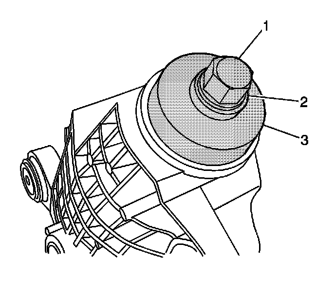
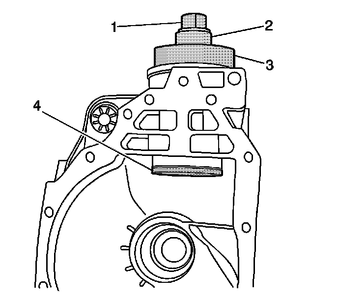
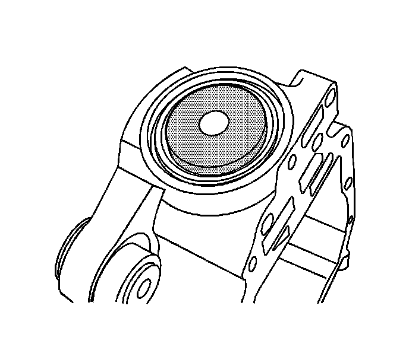
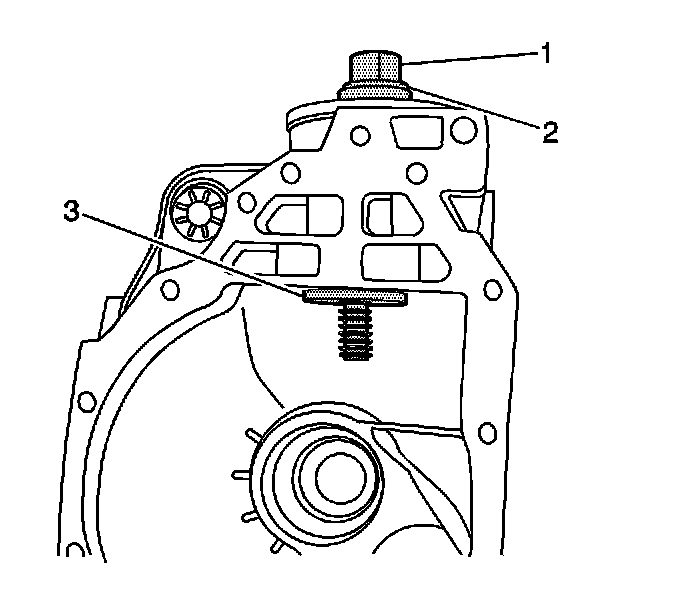

Pinion Bearing Cup Installation (8.25 Inch Axle w/J 45858)
Pinion Bearing Cup Installation (8.25 Inch Axle w/J 45858)
Tools Required
J-45858 Pinion Bearing Race Remover/Installer - 8.25 in Axle
1. Before assembly, lubricate the following parts with axle lubricant. Use the proper fluid. Refer to Sealers, Adhesives, and Lubricants.
^ The pinion bearings
^ The pinion and the differential gears
^ The thrust washers
^ The pinion bearing cups

2. Install the J 45858-3 (3), the thrust bearing and the washer (2), and the J 45858-6 (1) over the outer pinion bearing cup bore.

3. Install the inner pinion bearing cup and the J 45858-2 (4) to the J 45858-6 (1).
Slowly turn the J 45858-6 until the inner pinion bearing cup is evenly seated over the inner pinion bearing cup bore.
4. Turn the J 45858-6 clockwise slowly in order to draw the inner pinion bearing cup into the inner pinion bearing cup bore.
Inspect the position of the inner pinion bearing cup as it is being drawn into the inner pinion bearing cup bore to ensure the bearing cup is being pulled straight into the pinion bearing cup bore. If the pinion bearing cup is not being pulled straight into the bearing cup bore, remove the J-45858 and the inner pinion bearing cup and reposition the inner pinion bearing cup.
5. Tighten the J 45858-6 until the inner pinion bearing cup is seated in the inner pinion bearing cup bore.
6. Remove the J-45858.

7. Install the outer pinion bearing cup and the J 45858-1 over the outer pinion bearing cup bore.

8. Install the thrust bearing and the washer (2), the J 45858-6 (1), and the J 45858-2 (3) as shown.
9. Slowly turn the J 45858-6 until the outer pinion bearing cup is evenly seated over the outer pinion bearing cup bore and the J 45858-2 is evenly seated within the inner pinion bearing cup.
10. Turn the J 45858-6 clockwise slowly in order to draw the outer pinion bearing cup into the outer pinion bearing cup bore.
Inspect the position of the outer pinion bearing cup as it is being drawn into the outer pinion bearing cup bore to ensure the bearing cup is being pulled straight into the pinion bearing cup bore. If the pinion bearing cup is not being pulled straight into the bearing cup bore, remove the J-45858 and the outer pinion bearing cup and reposition the outer pinion bearing cup.
11. Tighten the forcing screw until the outer pinion bearing cup is seated in the outer pinion bearing cup bore.
12. Remove the J-45858.
13. Measure the pinion depth and determine the selectable pinion shim thickness. Refer to Pinion Depth Adjustment.